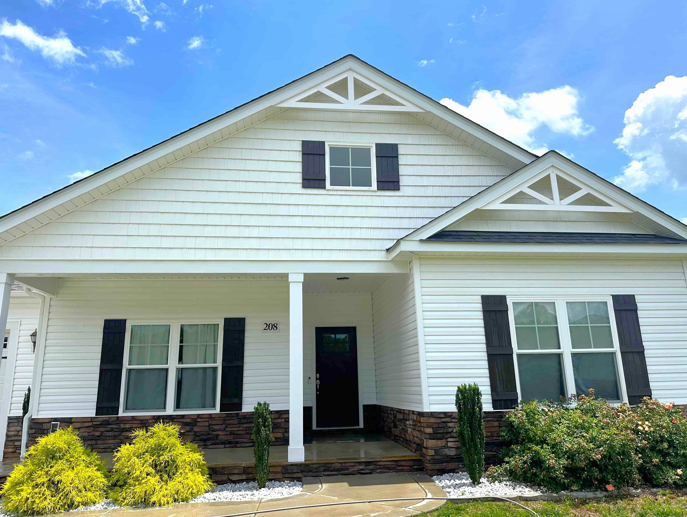
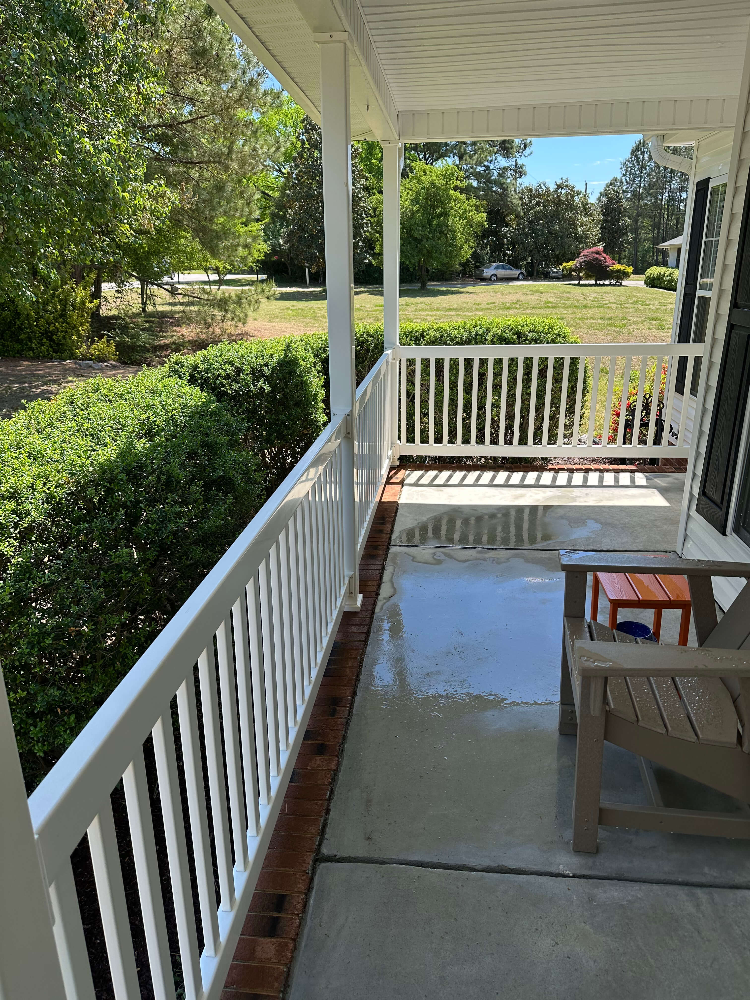

Clayton, NC — Est. locally, built on trust
Fully licensed, insured, and proud to serve the Triangle and Johnston County — one clean surface at a time.

About Jetstream Surface Solutions
At Jetstream Surface Solutions, we believe the outside of your property deserves just as much care as the inside. Based in Clayton, NC, we are a locally owned and operated pressure washing company serving homeowners and businesses across the greater Raleigh area, including Clayton, Fuquay-Varina, and Smithfield.
We built this business on a simple principle: show up, do the job right, and leave every surface looking its best. Whether it's years of algae buildup on your siding, oil stains on your driveway, or grime on your commercial property, our team has the equipment and expertise to handle it all.
Every job we take on is backed by our full licensing and insurance — so you can have complete confidence from the moment we arrive to the moment we pack up.
Why Jetstream
We are fully licensed and insured, giving you peace of mind on every job. You're protected, and so is your property.
We're your neighbors. Based in Clayton, we understand what NC weather does to exterior surfaces — and we know how to fix it.
No guesswork, no surprises. We offer free, no-obligation estimates so you know exactly what to expect before any work begins.
From a single-family home to a commercial storefront or dumpster pad, no job is too small or too large for our team.
What We Clean

Where We Work
Jetstream Surface Solutions is based in Clayton, NC and provides professional pressure washing services throughout Wake and Johnston County. Not sure if we service your area? Give us a call — we're happy to help.